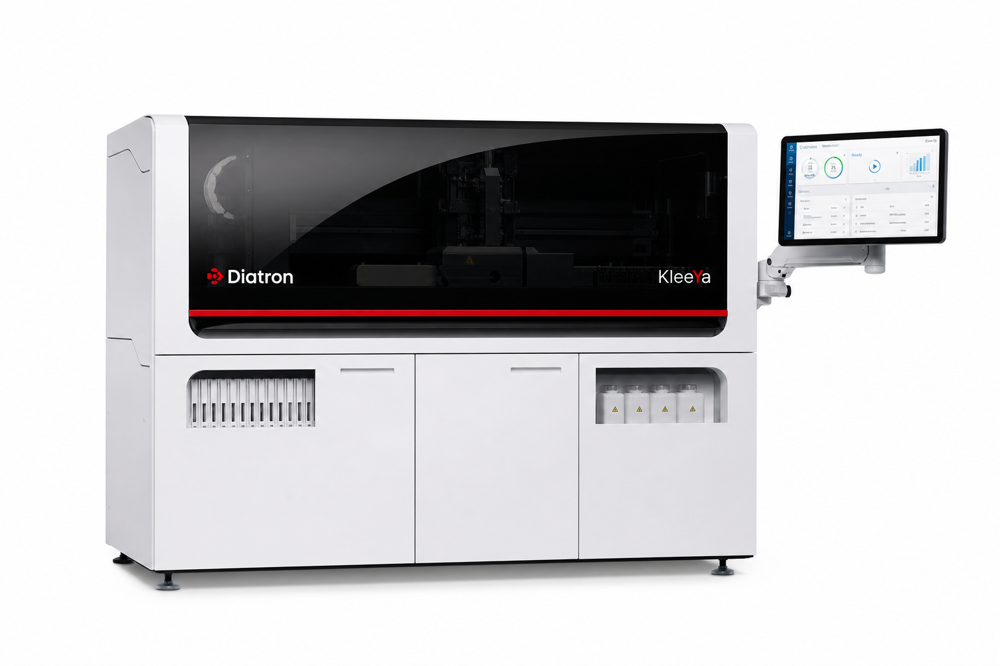

🇭🇺 EU vs 🇨🇭 Швейцария • Данные НПО • 120 vs 86 т/ч
KLEEYA vs Roche Cobas e411 / E601
По таблице НПО «Диагностические системы»: Cobas e411 — 86 т/ч, 18 реагентов, 75 образцов; Cobas E601 — 170 т/ч, 25 реагентов, 300 образцов. KleeYa — 120 т/ч, 500 кювет, 16 реагентов, 72 образца, открытая платформа.

KLEEYA
120 т/ч • 500 кювет • 16 реагентов • 72 пробы • Открытая
VS

Roche Cobas e411 / E601
e411: 86 т/ч • 18 реаг. • 75 проб / E601: 170 т/ч • 25 реаг. • 300 проб
| Параметр | KLEEYA (НПО) | Cobas e411 (НПО) | Вывод |
|---|---|---|---|
| Технология | Flash CLIA, магнитные частицы + акридиний | ECL Ru(bpy)3 | Обе высокочувствительны |
| Кюветы | 500 | — (E601 — ) | KLEEYA автономнее |
| Пропускная спос. | 120 т/ч | 86 т/ч (170 у E601) | KLEEYA +40% vs e411 |
| Пробы | 72 | 75 (300 у E601) | Паритет vs e411 |
| Реагенты | 16 | 18 (25 у E601) | Паритет |
| Открытость | Открытая — 170 параметров, микс BioVendor | Закрытая — только Roche | KLEEYA — свобода |
| Экономика | 4–8 потерь/сут, 56 дн стабильность | Высокая стоимость Roche | KLEEYA дешевле |
| Страна | Венгрия/Германия (EU) | Швейцария/Германия (EU) | Оба EU |
Почему KLEEYA vs e411
- На 40% производительнее e411 (120 vs 86) — закроет рост без второго прибора
- 500 кювет vs — — walk-away на смену vs частые паузы
- Открытая — не привязаны к прайсу Roche
- Дешевле тест при сопоставимой чувствительности
Где Roche сильнее
- Бренд и база ECL-тестов, E601 — 170 т/ч для крупных
- ECL-метка — низкий фон
Плюсы Cobas e411 / E601
- e411 компактный настольный, E601 — 300 проб / 170 т/ч
- Roche-качество, LIS, поддержка
Минусы vs KLEEYA
- e411 на 40% медленнее, закрытая дорогая экосистема
- Нет 500 кювет, нет уникальных панелей KLEEYA (MxA, Alzheimer)
Вердикт
Малая лаба и нужен Roche-бренд — e411. Средний поток и нужен рост с открытой платформой — KLEEYA (+40% vs e411, 500 кювет). Для крупного потока — сравнивайте уже E601 (170 т/ч, 300 проб) vs два KleeYa.